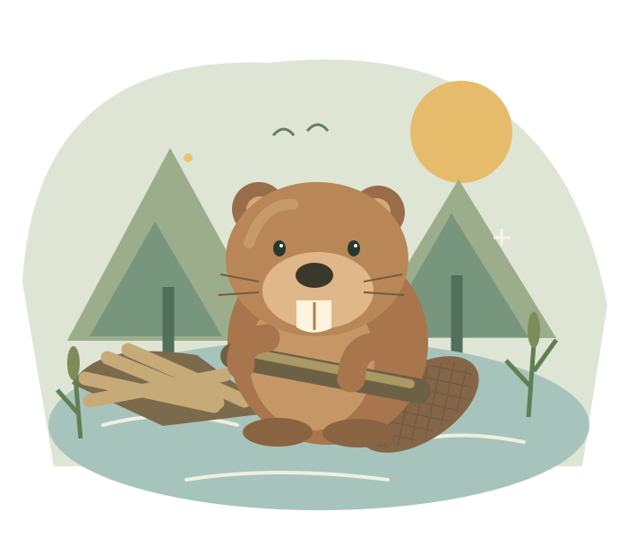

FIELD NOTE — 001

Castor認識河流裡的建築師
NATURE'SENGINEER
✳
橘色門牙 ✳ 水下祕密 ✳ 築壩日常 ✳ 濕地鄰居 ✳ 一起好奇
THE KNOWLEDGE COLLECTION
打開你的河狸筆記
每一個「原來如此」，
都是重新認識自然的開始。
這一帶還沒有找到筆記
試試其他關鍵字，或回到全部知識。
A LITTLE BEAVER CHALLENGE
你有多懂河狸？
五個小問題，看看你是不是
下一位河狸觀察家。
CURIOUS, WITH SOURCES
好奇，也要有根據。
本站以自然保育機關、國家公園與動物園公開資料編寫。每則筆記標示適用物種及參考來源，避免把某地的觀察當成所有河狸的通則。內容為繁體中文整理，插畫為原創示意，並非物種鑑定圖。
Smithsonian’s National ZooU.S. National Park ServiceNatureScot